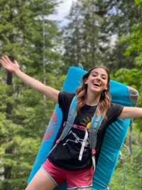

Specifally bouldering. Bouldering is essentially free climbing. Shorter, more dynamic projects.
Climbing and getting strong has proved to be extremely empowering for me. As a small, biologically female person, it's really nice being strong. Climbing has also taught me to try hard and problem solve.
Rocks are cool. I have a huge collection of rocks and crystals at home, both that I've collected and bought.
Though I'm a slightly incompetent plant mom, I'm working on it. Cacti, however, I can usually keep alive! They don't need much water and are pretty resilient.
